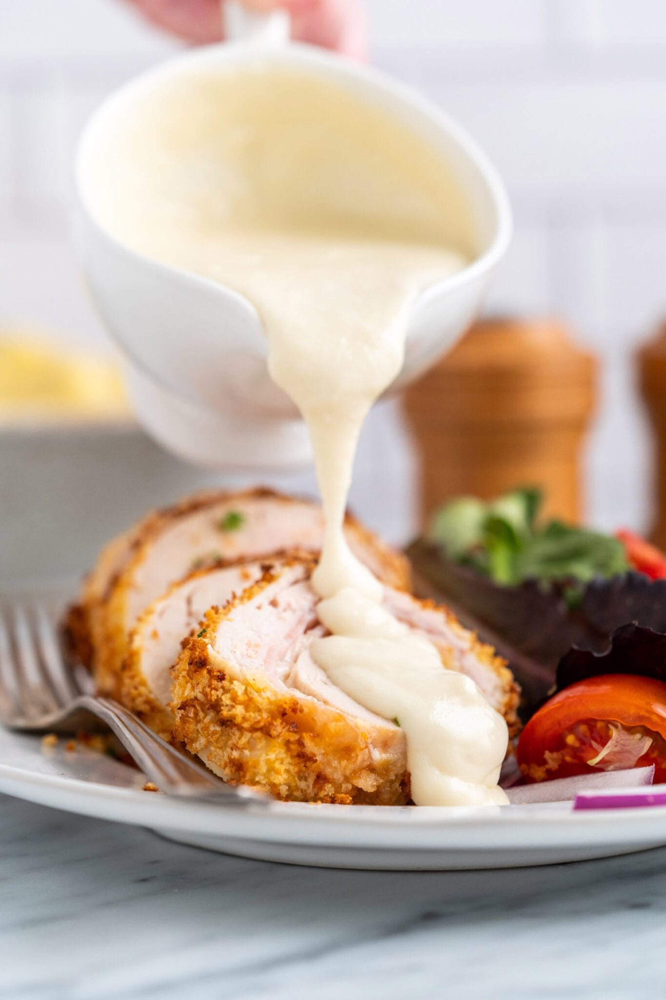

AIR FRYER CHICKEN CORDON BLEU

why Air Fryer Chicken Cordon Bleu?
Air fryer chicken cordon bleu eliminates the oily,
greasy mess of traditional pan-frying without skimping on flavor or tasty results.
Much like our oven baked chicken cordon bleu recipe, it produces juicy
and tender breaded chicken breast rolled together
with melty cheese and ham minus all the hassle of oil clean-up.
It is always fun to make fancy meals in the air fryer.
It is basically a mini convection oven after all, so the possibilities are endless.
Plus, air fryers always tend to give you crispy,
golden results in the same amount of time, if not less, compared to conventional methods.
Ingredients
- 2 boneless, skinless chicken breasts
- salt and ground black pepper to taste
- 1 tablespoon Dijon mustard
- 4 slices deli Swiss cheese
- ¼ cup all-purpose flour
- 1 cup panko bread crumbs
- ⅓ cup grated Parmesan cheese
- 1 cup panko bread crumbs
- 4 slices deli ham
- 1 egg, beaten
- cooking spray
- 2 toothpicks
Steps
- Place a chicken breast on a flat work surface.
Slice horizontally through the middle, being careful not to cut
all the way through to the other
side. Open the 2 sides and spread them out like an open book.
Place chicken breast between 2
sheets of heavy plastic on a solid, level surface; lightly pound with the smooth side
of a meat mallet to a 1/4-inch thickness. Repeat with remaining chicken breast.
- Season each chicken breast with salt and pepper.
Spread Dijon mustard on top. Place 1 slice of cheese on each breast.
Top each with 2 slices of ham and 1 slice of cheese. Roll each breast up
and secure with a toothpick.
- Place flour in a shallow bowl. Place egg in a second bowl.
Mix panko bread crumbs and grated Parmesan in a third bowl.
- Preheat an air fryer to 350 degrees F (175 degrees C).
- Meanwhile, dredge chicken breasts in flour;
shake off excess. Dip into beaten egg, allowing any excess egg
to drip back into the bowl.
Press into bread crumb mixture to coat both sides;
place breaded chicken breasts onto a
plate and spray with nonstick spray. Let sit for 5 minutes while the air
fryer preheats,
then arrange breaded chicken in a single layer in the air fryer basket.
- Cook in the preheated air fryer for 10 minutes; flip chicken
breasts and spray any dry spots with nonstick spray. Cook until chicken is no longer
pink in the center, 8 minutes more. An instant-read thermometer
inserted into the center should read at least 165 degrees F (74 degrees C).